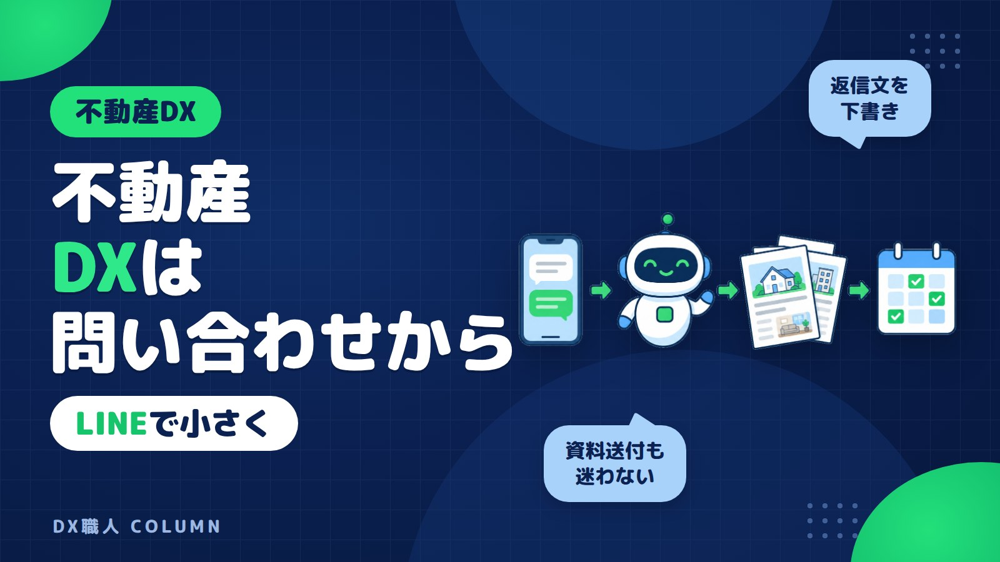

不動産DXの始め方 小規模会社の問い合わせと資料AI活用
地域の不動産会社では、電話、メール、ポータルサイトの問い合わせが重なり、返信文や物件資料の準備が後回しになりがちです。この記事では、LINEで内容を集め、AIが下書きを作り、担当者が確認して送る小さな不動産DXの始め方を説明します。まず何から変えるかが分かります。

この記事の要点
- 不動産DXは問い合わせから始める
- LINEで要件をまとめて見える化
- AIが返信文と紹介文を下書き
- 送信前は担当者が必ず確認
- 補助金・助成金は年度確認
不動産DXの始め方は問い合わせ対応からでよい
不動産DXと聞くと、大きな管理システムを入れる話に見えます。DXとは、デジタルの力で仕事の進め方を楽にすることです。小規模な不動産会社なら、最初から全部を変える必要はありません。
まず見るべき場所は、毎日必ず発生する問い合わせです。電話、メール、ポータルサイト、紹介のお客様からの連絡です。ここが整うと、物件資料の準備や内見連絡も続けて楽になります。
DX職人のAIシステムは、いつものLINEのトークから使えます。新しい画面を覚えるより、問い合わせ内容をLINEに送るところから始めます。AIが返信文や物件紹介文の下書きを作り、担当者が確認して送る流れです。
地域の不動産会社で止まりやすい業務は決まっている
地域の不動産会社では、少人数で接客、物件確認、資料作成、内見調整を回します。担当者が外出している間に問い合わせが入り、事務所では電話メモが残ります。夕方になってから、メール返信や資料送付をまとめて行うこともあります。
止まりやすい業務は、次のようなものです。
- ポータルサイトの問い合わせを読み直す
- 希望条件を紙やメモに書き写す
- 物件紹介文を毎回考える
- 資料送付メールの文章を作る
- 内見日時を何度も確認する
これらは専門判断というより、書き直しと確認が多い作業です。つまり、AIシステムが下書きを作りやすい領域です。人が決める部分と、AIに任せる部分を分けると、無理なく始められます。
LINEで問い合わせ内容を受けると確認が楽になる
最初の改善は、問い合わせ内容をLINEに集めることです。お客様との連絡手段をすべて変える必要はありません。ポータルサイトやメールで届いた内容を、担当者がLINEに送るだけでも始められます。
たとえば、次のような使い方です。
| 場面 | LINEに送る内容 | AIシステムの返り |
|---|---|---|
| 賃貸問い合わせ | 希望条件と物件名 | 返信文の下書き |
| 売買問い合わせ | 予算とエリア | 確認事項の整理 |
| 資料請求 | 送る物件と相手 | 送付文の下書き |
| 内見希望 | 希望日時 | 候補日時の案内文 |
LINEは、事務所の連絡窓口として使えます。移動中の担当者も、スマホで内容を確認できます。誰が見ても同じ情報にたどり着けるので、口頭だけの伝言よりミスを減らしやすくなります。
大切なのは、AIが勝手にお客様へ送らないことです。下書きが返ってきたら、担当者が物件状況や表現を確認します。そのうえで、メールやメッセージとして送ります。
AIが返信文と物件紹介文の下書きを作る
不動産の問い合わせ返信は、毎回ゼロから書くと時間がかかります。丁寧に書こうとすると、文章が長くなります。急いで書くと、確認事項が抜けることもあります。
LINEに次のように送ると、AIシステムが下書きを作れます。
入力例：2LDK、駅徒歩10分以内、ペット可、家賃12万円まで。問い合わせ物件は空き確認中。似た条件も提案したい。
返る下書き例：お問い合わせありがとうございます。ご希望条件を確認しました。該当物件の空き状況を確認のうえ、本日中にご連絡します。あわせて、条件に近い物件もいくつかご提案いたします。
この下書きをそのまま使うのではなく、担当者が直します。空室状況、管理会社への確認、広告掲載の条件などは人が判断します。AIは文章のたたき台を作る役です。これだけでも、返信の遅れを減らしやすくなります。
物件資料の送付と内見連絡も流れで整える
問い合わせ返信の次に楽にしやすいのが、物件資料の送付です。資料そのものをAIが勝手に作り替えるのではありません。送付文、添付忘れの確認、次の連絡文を整える使い方です。
たとえば、LINEに物件名、送付先、内見希望の有無を送ります。AIシステムは、資料送付メールの文面、確認しておく項目、内見案内の下書きを返します。担当者は添付資料と内容を確認して送ります。
内見連絡でも使えます。お客様の希望日時、鍵の手配、現地集合か店舗集合かをLINEに送ります。すると、案内文の下書きができます。夜にまとめて文章を作る負担を減らせます。
小さな会社ほど、担当者の頭の中に段取りが集まりがちです。LINE上に流れを残すと、事務所の別の人も状況を追いやすくなります。
小規模な不動産会社が始める3ステップ
不動産会社のDXは、いきなり全業務を変えないほうが続けやすいです。まずは、よくある問い合わせだけに絞ります。賃貸なら条件問い合わせ、売買なら資料請求など、件数が多いものを選びます。
おすすめの始め方は、次の3ステップです。
- よくある問い合わせを10件集める 過去のメールやポータルサイトの内容を見ます。お客様がよく聞くことを並べます。
- LINEに送る形を決める 物件名、希望条件、返信したい内容など、送る項目を決めます。文章ではなく、箇条書きでも十分です。
- AIの下書きを担当者が確認する 表現、金額、空室状況、法的に注意する表現を確認します。問題なければ送ります。
この流れなら、ITが得意でない人でも始めやすくなります。新しい操作を増やすより、今あるLINEに仕事の要点を送るだけです。
費用と補助金・助成金は導入前に確認する
AIシステムの費用は、使う範囲で変わります。問い合わせ返信だけなのか、物件資料の送付文まで使うのか。LINEとのつなぎ込みや、既存データの整理が必要かでも変わります。
不動産会社でも、IT導入補助金などの補助金を確認できる場合があります。補助金は、ITツールの導入費用を支援する制度です。ただし、対象ツール、申請できる枠、スケジュールは年度で変わります。
助成金についても、使える場合があります。制度ごとに要件があるので、ご相談の際に確認します。2026年10月26日時点でも、金額や対象範囲は最新の公募要領で見る必要があります。
先に確認したいのは、目的です。問い合わせ返信を早くしたいのか、物件紹介文のバラつきを減らしたいのか。目的が決まると、必要なAIシステムの範囲と、補助金・助成金の確認もしやすくなります。
個人情報と物件情報は送信前に必ず確認する
不動産DXでは、便利さと同じくらい情報の扱いが大切です。氏名、電話番号、住所、勤務先、年収などは、お客様の大切な情報です。AIに入れる内容は、社内で範囲を決めておくと安心です。
最初は、個人名を入れずに希望条件だけで下書きを作る方法があります。たとえば、氏名ではなくお客様A、電話番号ではなく連絡先確認済み、のように置き換えます。必要以上の情報を入れないことが基本です。
物件情報も同じです。未公開情報、オーナー情報、条件交渉中の内容は慎重に扱います。AIが作った文面は、広告表現として問題がないかを担当者が確認します。
情報の線引きはAIに入力してよい情報、避けたほうがよい情報でも詳しく整理しています。DX職人では、LINEで使いやすくしながら、確認してから送る流れを大切にしています。
よくある質問
小規模な不動産会社でもDXは必要ですか？
必要な場合があります。大きなシステムより、問い合わせ返信や物件資料の送付文など、毎日発生する作業から始めると効果を感じやすくなります。
問い合わせ返信をAIに任せても大丈夫ですか？
AIに任せきりにするのではなく、返信文の下書きを作らせる使い方が安心です。空室状況、金額、表現は担当者が確認してから送ります。
物件資料をLINEで扱っても問題ありませんか？
扱う情報の範囲を決めることが大切です。個人情報や未公開情報は慎重に扱い、まずは希望条件や送付文の下書きから使う方法があります。
補助金や助成金は不動産会社も使えますか？
使える場合があります。ただし、対象事業者、対象ツール、申請時期は制度や年度で変わります。最新の公募要領を確認しながら判断します。